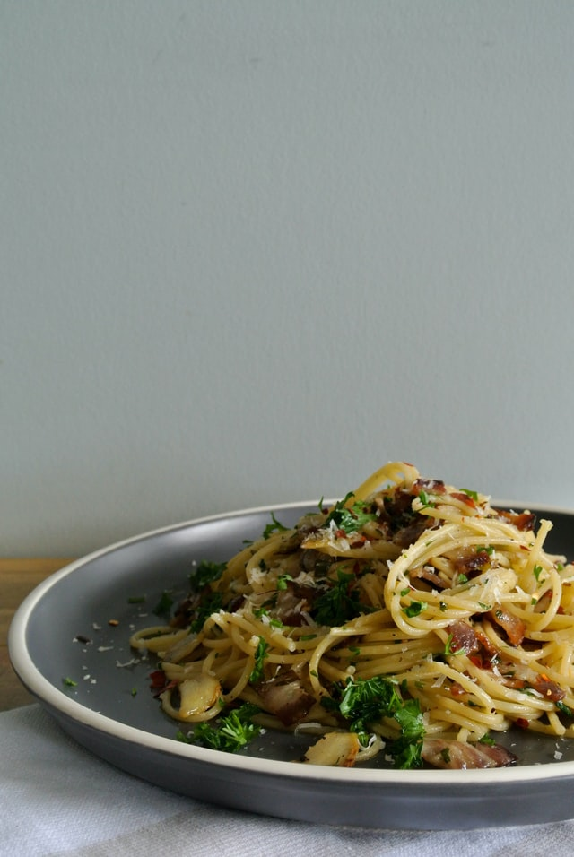

Garlic Noodles

Description
These garlic noodles are delicous - savory and salty and garlicky and incredible.
Ingredients
- 200g noodles
- 3 tbs parmesean cheese, grated
- 7 cloves garlic, minced
- 2 tbs butter
- 1 tablespoon oyster sause
- 1 teaspoon soy sauce
- 1 teaspoon fish sauce
Steps
- Begin by cooking your noodles in a shallow saucepan
- Add butter and minced garlic to a saucepan. Cook until butter is melted and garlic is fragrant, but not brown
- Once pasta is ready, add to butter/garlic mixture. No need to strain the pasta. Any water will help emulsify the liquid. Mix well.
- Add the soy sauce, oyster sauce, fish sauce, and paremsean chease. Mix well.
- Serve pasta!